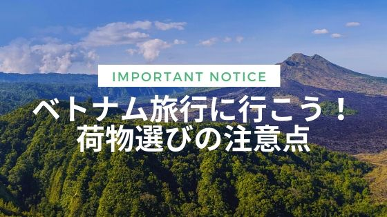
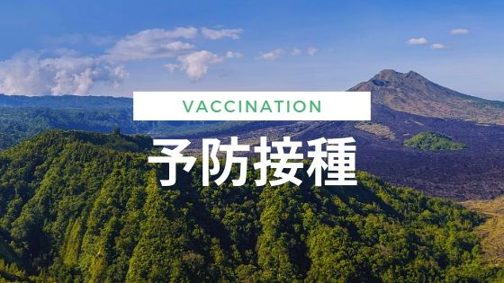
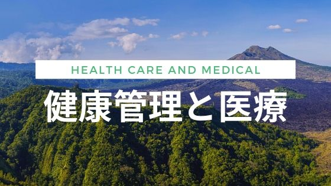

お役立ち情報一覧
Info
2020/06/08
ベトナムの人となり
言い換えるなら、性格や国民性。
それらは実際、人間の数だけ違いはあるもので、それを定義することに大きな意味はないかもしれません。
Info
2020/06/08
ベトナムの歴史
ベトナムの歩んできた道は、 他国からの侵攻と、それらに対する抵抗運動の歴史であると捉えられます。
Info
2020/06/08
ベトナムの地理
南シナ海に沿って南北におよそ1600kmの細長いＳ字型の国土を有するベトナム。東西のもっとも狭いところでは、約50kmの幅しかありません。このような国土を、両端に米かごをつるした天秤棒に例えます。
Info

2020/06/08
ベトナム旅行に行こう！荷物選びの注意点
ベトナムへ行く際はご一読！日本とはルールの異なる国へ入るには、まずは荷物に気をつけなければなりません。持ち物チェックリストと合わせてご活用ください。
Info

2020/06/08
予防接種
短期間の滞在、しかも日本からのツアー参加などの場合、予防接種の必要性は低いと言えます。しかし当然ながら、生氷を食べない、養鶏場や野犬には近づかないなど十分に気をつけましょう。
Info

2020/06/08
健康管理と医療
ベトナムで注意すべき病気は、日本とは違う気候風土が原因のものと、衛生状態の悪さからの食中毒による感染症の大きく２つに分けられます。
Info
2020/06/08
持ち物チェックリスト
ベトナム旅行の際の持ち物チェックリストです。下の表にいくにつれて、重要度が低くなっています。あくまで筆者の体験に基づくものとして参考程度にご活用ください。
Blog
2020/06/08
ベトナムで暮らす～私の留学体験記
大学生の頃、ベトナムの首都・ハノイで留学生活をしていました。ベトナムに興味があり、機会があれば暮らしてみたいと考える方へ向けて、当時の体験をお話させていただきます。
Info
2020/06/16
はじめての交流会
交流会に今まで参加したことなかった方！大丈夫です！みんなはじめは初心者でした。初めての参加を不安に思っている方向けの記事を書きました。
Info
2020/07/20
ベトナム交流会ができるまで
どのようにして交流会ができ上がるのでしょうか。メンバーの打ち合わせの様子をちょっと覗いてみましょう。
Info
2020/10/05
おいしくヘルシーなベトナムつけ麺「ブンチャー」
Bún chả (ブンチャー) とは、ベトナム風のつけ麺のような料理で、ハノイを中心とした北ベトナム地域の名物です。